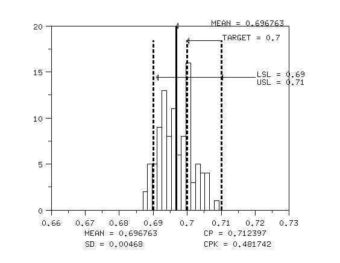

3.
Production
Process Characterization
3.4.
Data Analysis for PPC
3.4.6.
|
Assessing Process Capability
|
|
|
Capability compares a process against its specification
|
Process capability analysis entails comparing the performance of a
process against its specifications. We say that a process is capable
if virtually all of the possible variable values fall within the
specification limits.
|
| Use a capability chart |
Graphically, we assess process capability by plotting
the process specification limits on a histogram of the observations. If
the histogram falls within the specification limits, then the process is
capable. This is illustrated in the graph below. Note how the process is
shifted below target and the process variation is too large. This is an
example of an incapable process.
|
|
Notice how the process is off target and has too much variation
|

|
|
|
Numerically, we measure capability with a capability index. The general
equation for the capability index, Cp, is:
|
|
Numerically, we use the Cp index
|
\( C_{p} = \frac{\mbox{USL} - \mbox{LSL}}{6s} \)
|
|
Interpretation of the Cp index
|
This equation just says that the measure of our process capability
is how much of our observed process variation is covered by the process
specifications. In this case the process variation is measured by 6
standard deviations (+/- 3 on each side of the mean). Clearly, if
Cp > 1.0, then the process specification covers
almost all of our process observations.
|
|
Cp does not account for process that is off center
|
The only problem with with the Cp index is that it
does not account for a process that is off-center. We can modify this
equation slightly to account for off-center processes to obtain the
Cpk index as follows:
|
| Or the Cpk index |
\( C_{pk} = \min \left[ \frac{\mbox{USL} - \bar{x}}{3s},
\frac{\bar{x} - \mbox{LSL}}{3s} \right] \)
|
|
Cpk accounts for a process being off center |
This equation just says to take the minimum distance between our
specification limits and the process mean and divide it by 3
standard deviations to arrive at the measure of process capability.
This is all covered in more detail in the
process capability
section of the process monitoring chapter. For the example above,
note how the Cpk value is less than the
Cp value. This is because the process
distribution is not centered between the specification limits.
|